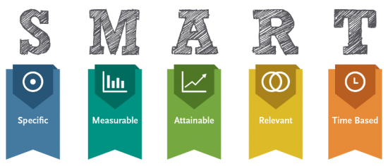

Eljön az idő, amikor érdemes számba venni, amit eddig megcsináltunk, elhagyni, amivel nem haladunk, és új
célokat magunk elé tűzni. Kicsit olyan ez, mint a tavaszi nagytakarítás, polcsöprés. Kidobáljuk a lejárt
konzervdobozokat, lyukas liszteszsákot, és összeírjuk, mire van szükségünk a kamrában?
Mi van a kamrában? Avagy a SMART célok
Van egy nagyon jó kis módszer, amivel valódi sikerélményt szerezhetünk magunknak. Ez nem más,
mint MEGVALÓSÍTHATÓ célokat kitűzni magunk elé! Ezzel elkerüljük a sikertelenséget, csalódottságot, és
megóv minket, hogy légvárakat építsünk. Bár az álmodozás és a tervezgetés kétség kívül a fejlődés egyik
mozgatórugója, úgyhogy szabadidőnkben továbbra is álmodozzunk csak a kanapén fekve, barátokkal közösen
egy hangos estén, esetleg egy virágos rét közepén, egy pokrócon, miközben szikrázó napsütés cirógatja az
arcunkat. :)
Milyen egy megvalósítható cél?

A SMART rövidítés a sikerélménnyel kecsegtető célok tulajdonságainak angol elnevezéseiből áll össze:
Specific: Specifikus. Egy célnak mindig konkrétnak kell lenni. Minél részletesebben
meghatározunk egy konkrét célt, annál könnyebben nyomon tudjuk követni.
Measurable: Mérhető. Olyan célt érdemes választani, aminek a megvalósítását mérni
lehet. A visszajelzés a fejlődési folyamat része, ezért nagyban segíti, ha tudjuk, miben lehet
mérni.
Attainable vagy Achievable: Elérhető. Fontos, hogy feltegyük a kérdést, hogy a
választott célunk kivitelezhető-e? Rendelkezük hozzá a kellő tudással és eszközzel? Nem érdemes
megvalósíthatatlan célokat kitűzni magunk elé.
Relevant: Lényeges. Azt a kérdést is érdemes feltenni, hogy az adott cél mennyiben
segíti a haladásunkat? Tényleg szükségünk van rá? A feladatok fontossági sorrendjének felállítására
létezik egy másik működő módszer, az Urgent-Important Matrix.
Time Based: Határidők. Adjunk meg magunknak egy teljesíthető határidőt, ameddig
készen kell lennünk a feladattal. A halogatás ugyanis "egészségtelen" dolog :). Azok a célok,
amiknek záros határidőn belül lejárata van, arra sarkallnak, hogy közeleg a határidő, készen kell
lenni vele.
Tanulási céljaink számbavétele
Jó dolog néha hátradőlni, és elégedetten szemlélni munkánk gyümölcsét. A tanulást tekintve nem tudunk
kézzel fogható eredményeket szemlélni, de számba vehetjük, miket tudunk már, mit valósítottunk meg
eddig. Haladjunk a végső céltól visszafelé! Milyen végeredményt szeretnénk elérni? Ehhez milyen lépések
szükségesek még? Mire van most jelenleg szükségünk, és milyen célok azok, amik nem
lényegesek (Relevant), meg tudunk tőlük szabadulni?
Mivel én folyamatosan újratervezek, nálam ez kisebb lépésekben zajlik. Most húsvét után például
elhatároztam, hogy mától kezdve minden nap időt fordítok a fejlődésre, tanulásra. A hét utolsó napján
pedig elégedetten nyugtáztam, hogy egy héten keresztül sikerült minden nap haladonom valamivel.
Így kézenfekvő volt számba venni, hogy miket terveztem el a napok során, mivel tudtam haladni, és mivel
nem tudtam? Összeírtam magamnak a tanulási forrásaimat, amiből öt jött ki, tehát a hét minden napjára
jut egy. Miután a heti teljesítményemet is összeírtam, láttam, hogy napi 2 óra tanulással legfeljebb
kettő célt tudok reálisan elérni. Így az új célom az lett, hogy legfeljebb két célt valósítok meg egy
nap alatt.
Ki a régi ruhával, elő az újjal!
Szabaduljunk meg az elérhetetlen céloktól! Ha úgy érezzük, feltornyosulnak a célok, érdemes elővenni egy
papírt, és leírni őket. Aztán számbavenni: tényleg fontos? Melyik cél sürgős? Erre nagyon jó módszer az
Urgent-Important Matrix. Ha
minden feladatot meg szeretnénk csinálni, ne essünk neki egyből az egésznek. Bontsuk le kisebb
feladatokra, és adjunk megvalósítható határidőket. Majd egy idő elteltével vegyük számba a kitűzött
célokat, újra és újra. A tervezés egy folyamat, minél többször újratervezzük céljainkat, annál jobban
látni fogjuk, mi az, ami megvalósítható, és mit kell még kisebb feladatokra bontani.
Az én konkrét céljaim
Vezetek egy kis "bullet journal"-hoz hasonló jegyzetfüzetet, amibe apró rajzok is elférnek. A vizuális
elemek nagyban segítik az átláthatóságot. Ugyanúgy, mint egy honlap tervezésekor.
Ebbe a kis naplóba az egyik nap firkantottam listát, hogy miket szeretnék aznap megvalósítani. A lista
elég hosszú lett, és elszomorított, hogy ez így mind egy nap megvalósíthatatlannak tűnik. Sokat akar a
szarka, de nem bírja a farka! Sebaj, ezek a feladatok több napra szétdobva pont megvalósíthatók lesznek.
Aztán összeírtam, hogy most jelenleg milyen tanulási platformokat használok.
Interveiwcake heti feladatai ingyenes
hírlevélben.
Számomra ezek a feladatok a képességeimet kis mértékben meghaladó kihívást jelentenek.
Parker informatikus- és matektanár, aki egy programozási interjúra felkészítő tanfolyamot állított
össze. Ezek a feladatok az algoritmikus gondolkodást fejlesztik. Leginkább medior illetve senior
szintű programozók állásinterjújára készít fel. Kezdőként eléggé belecsap a lecsóba, de nagy adag
ambícióval belevágtam a feladatokba. A megoldást nem rögtön adja meg, nagyon sokat súg, mire elérünk
a végső megoldásig.
Blogolás: Az írás, a tudás továbbadása elmélyíti a tudásanyagot.
Projektek: A learning by doing módszer a programozásban nagyon fontos. Minél több
projektet készítek a tanulás során, kitalálok feladatokat, amivel az újonnan megszerzett tudást és
az eddig szerzett ismereteket is hasznosíthatom.
Contribution: az Open Source projektekhez való hozzájárulást nemrég kezdtem. Ez
önkéntes munkát jelent, amivel valódi munkatapasztalatot szerzek. Ez tulajdonképpen egy élő
portfólió, amihez bármelyik fejvadász hozzáférhet, és bármikor leinformálhatja az eddigi munkáimat.
Új célok, új lendület
Egy másik nap készítettem egy táblázatot, amibe felírtam, hogy a héten miket teljesítettem. Ebből
levontam a konzekvenciát, hogy napi 1 óra tanulás mellett egy nap alatt legfeljebb egyfajta feladatot
tudok elvégezni. Ezek alapján megírtam az új célomat, hogy egy nap alatt legfeljebb két célt tűzök ki
magam elé.
Érdemes rendszeres időközönként átnézni a céljainkat. Újratervezéssel friss lendületet vehet a
fejlődésünk, új színt hozhat munkánkba.
Mi a különbség a Web Designer és a Web Developer között?
A webfejlesztő (vagy UI developer, vagy front-end developer) programozók, akik a webdesigner tervei és
mockup-jai alapján készítenek működő weboldalakat, appokat, programokat.
Mit csinál a Web Designer?
A web designerek (vagy honlaptervező) kreatív szakemberek, akik egy weboldal minden elemét megtervezik. A
webdesign nem a kódolásról szól, hogy egy működő weboldalt készüljön, hanem inkább egy weboldal
layout-ját tervezik meg, a színpalettától kezdve a betűtípusokon át a vizuális design részletekig.
A web designer szakma a digitális világnak csak egy része. A Visual Design egy tágabb kategória, amibe
beletartozik a Web Designer, a Grafikus Designer, a UX designer, stb.
Mi a különbség a Web Developer és a Web Designer között?
Nem, ezek nem szinonim kifejezések. Ez két külön szakma, bár láttam én már karón varjút, akarom mondani
egy webfejlesztő nyugodtan tanulhat webdesignt, és ez visszafele is érvényes. Habár mindkét terület
különböző képességeket igényel, és más feladatokat látnak el. Mindjárt felsoroljuk a két szakterülethez
szükséges tudást, de alapvetően: a Web Designer olyan, mint egy építész, egy Web Developer pedig olyan,
mint egy építőipari cég. Az egyikőjük arról gondoskodik, hogyan nézzen ki a weboldal, és
terveket készít hozzá, mint egy építész tervrajzai, a másik pedig megépíti azt a tervek
alapján.
Milyen tudás szükséges ahhoz, hogy webfejlesztő légy?
A webfejlesztő tudástára nem sokban különbözik a programozókétól. Kifejezetten a webprogramozásban az
alábbi tudásra van szükség:
HTML/CSS:
Ha webfejlesztő szeretnél lenni, erre a két programnyelvre biztosan
szükséged lesz. A HTML az a programnyelv, ami megmondja a böngészőnek, hogy milyen tartalmat
jelenítsen meg. Azt, hogy hogyan nézzen ki, milyen színű, méretű legyen, a CSS adja majd meg. Ez a
két programnyelv elegendő ahhoz, hogy statikus weboldalakat készíts, és elkezdj dolgozni. Egy jó
tanfolyamon ezt a két programnyelvet pár hét alatt kipipálhatod. Mindamellett, egy webdesigner
eszköztárában is nagyon jól jön ez a két programnyelv. Amellett, hogy segíti a tervezői munkáját,
HTML és CSS tudás birtokában saját maga is képes működő weboldalakat készíteni.
JavaScript:
A JavaScript egy széleskörűen elterjedt programnyelv, amit webes
alkalmazások fejlesztéséhez használnak. Ilyen lehet például egy mozgatható fotó-összeállítás,
animált grafikák, interaktív űrlapok vagy biztonságos fizetési felületek. Ne keverd össze a Java
nyelvvel, sok különbség van a kettő között. Ez utóbbit főleg Androidos alkalmazások fejlesztésére
használják.
JavaScript library-k és keretrendszerek, pl. jQuery, React:
A JavaScript önmagában
is egy ütős eszköz a webfejlesztő eszköztárában, azonban library-k használatával még erőteljesebb
képességekre tehetsz szert. Egy library olyan függvényeket tartalmaz, ami már előre megírt kódokat
tartalmaz. Ez lényegesen leegyszerűsíti a fejlesztés folyamatát, mert nem kell újra és újra
begépelni az adott kódot.
Ezen kívül vannak még a keretrendszerek, mint pl. a React. Ezek library-k gyűjteményét foglalják
magukban, amivel egy szélesebben skálázható alkalmazást is létre lehet hozni. A React keretrendszert
eredetileg a Facebook villámgyors megjelenítéséhez hozták létre. Azóta számtalan weboldal
alkalmazza.
PHP / Wordpress:
Az ingyenesen használható Wordpress egy tartalomkezelő rendszer
(Content Management System, rövidítve CMS). Mivel kezelése gyakorlatilag nem igényel kódolói
végzettséget, az előre beállított sablonok segítségével a weboldal készítőjének elegendő a tartalom
szerkesztésével és publikálásával foglalkozni. Mindezt egy felhasználóbarát felületen tudjuk
kezelni.
A Wordpress annak köszönheti népszerűségét, hogy azok is ezt választják, akiknek nincsen szükségük arra,
hogy egy weboldalt teljesen személyre szabjanak. Ezen kívül vannak, akik a feltöltött tartalmat később
maguk szeretnék módosítani és kezelni.
A Wordpress sablonokat HTML és CSS kódokkal módosítani is lehet, így egyénre szabott
megjelenítést készíthetsz egy weboldalnak. A PHP nyelv adja a Wordpress keretrendszer alapját.
Viszonylag gyorsan elsajátítható programnyelv.
Több 2-4 órás ingyenes tanfolyam is megmutatja, hogyan kezdj neki az alapoknak.
Míg saját kódbázissal dolgozunk, kivitelezői szabadságunknak csak programozói tapasztalatunk, az ismert
kódok szabnak határt. Tartalomkezelő rendszerek használatakor kötve vagyunk ahhoz, amit a platform
megenged.
Minden kezdet nehéz
Webfejlesztőként az a jó, hogy néhány projekttel a zsebünkben kezdőként is el tudunk helyezkedni. A
programozást azután folyamatosan tanulni kell, lényegében munka közben tanulunk.
Amit egy 10+ év tapasztalattal rendelkező webfejlesztő ajánl kezdő programozóknak: "Tanuld meg a
JavaScript alapjait, majd a legújabb nyelvi elemeket, a ES5/ES6 verzió újításait. Ezután tanulj meg
hozzá egy keretrendszert, ez lehet React, Vue vagy Angular. Nem az a fontos, hogy minél több
programnyelvet ismerj, hanem egyet, de alaposan."
Milyen tudás szükséges ahhoz, hogy web designer légy?
Ahhoz, hogy kreatív területen el tudj helyezkedni, a vizuális design elemeit és az ezehkez használt
eszközöket kell tudnod a gyakorlatban alkalmazni. Ha nincs időd munka mellett összemazsolázni ezt a
tudást ingyenes videókból, érdemes egy jól szervezett és gyakorlat-orientált online tanfolyam keretei
között tanulni. Íme néhány gyakorlati tudás, amiket célszerű elsajátítani:
Layout és navigáció
Ahogy a nyomtatott médiában, úgy a webes elrendezésben is egyformán fontos a tartalom és annak
megjelenése is. Egy weboldal képeit, szövegét, videóit és menüjét úgy kell elrendezni, hogy a
felhasználók hatékonyan tudjanak közöttük navigálni.
Színelmélet és tipográfia
Az elrendezés és navigáció mellett a színek és betűtípusok kiválasztása is fontos szereppel bírnak.
A színválasztás és a betűtípusok kiválasztása a designer szubjektív döntésein alapulhat, azonban a
színelméletnek komoly elméleti háttere van, ami pszichológiailag befolyásolja a látogatók döntéseit. A
betűtípus-választás is hasonlóan fontos tényező. Egy jó betű-párosítás nemcsak a weboldal látogatóinak
teszi könnyebbé az olvashatóságot, még azt is közvetlenül befolyásolja, hogyan rangsorolják a
keresőmotorok az adott weboldalt. Ezért érdemes erős gyakorlati tudást szerezni ezeken a területeken.
Mobile first design
Ma már túlnyomórészt, 52%-ban mobiltelefonokról látogatják a weboldalakat (Forrás: statista.com).
Ezért napjainkra a "mobile first" elv vált a webdesign és a webfejlesztés alapjává. A gyakorlatban ez
azt jelenti, hogy a designerek először a mobil designt tervezik meg, és ezt módosítják a továbbiakban
nagyobb képernyőméretekre. Vegyünk például egy pohár vizet. Látjuk, hogy a víz tökéletesen felveszi
a pohár formáját. Ha átöntjük egy másik pohárba, annak ugyanúgy fel fogja venni az alakját. Ugyanígy
elképzelhetjük a weboldalt is. Ami tuti pöpec egy mobilkészüléken, annak tökéletesen kell
kinéznie egy asztali gépen is.
Ezen UXPin
linken megismerhetjük a "mobile-first" design alapjait.
A webdesign területen "content-first" elvet is alkalmazzák, azaz ahhoz a tartalomhoz tervezik meg az
elrendezést, amit a gyakorlatban fel is fognak majd tölteni a készülő weboldalhoz.
Wireframing, mock-up és prototípus tesztelés
Igen-igen, a Wireframing, a mock-up és a prototípusok is fontos elemei a webdesignnak.
A wireframe az úgynevezett "drótváz", ami egy weboldal elrendezését adja. Térjünk
vissza az alapokhoz, és tervezzük meg az elrendezést füzet és toll segítségével! A tervezők, mielőtt
megnyitnák a tervezéshez használt Sketch, Figma vagy Adobe XD programot, először pennát ragadnak, és
felvázolják, hova tegyék a cikkeket, kapcsolattartó űrlapot vagy a képeket.
A mock-up tartalmaz minden vizuális elemet, amit egy fejlesztőnek továbbadnak:
elrendezés, képek, betűtípusok, színpaletta, navigációs ikonok.
A prototípust egy weboldal tesztelésére használják a végleges publikálás előtt. A
prototípus fogalma széles skálán mozog, tulajdonképpen lehet egy papírvázlat, vagy egy teljesen
működőképes digitális modell is.
Hasznos weboldalak designereknek
Ha tanulnád, vagy már épp tanulod a webprogramozást vagy a webdesignt, ezek az oldalak nagyon hasznosak
lehetnek számodra:
A sarkalatos kérdés - milyen fizetésre számíthatsz?
Elég széles skálán mozog ma Magyarországon a webdesignerek és webfejlesztők fizetése. A
fizetesek.hu
oldalon egy honlaptervező átlagos havi bruttó fizetése 510.000 Ft. Ugyanitt megadják a régióbeli
országok átlagos fizetési számait. Ezek alapján a cseheknél 680.000 Ft egy webdesigner átlagos fizetése,
míg a szlovák kollégák forintra átszámítva némileg kevesebbet, 600.000 Ft-ot vihetnek haza. Ugyanezen az
oldalon egy némi tapasztalattal, 1-2 éves gyakorlattal rendelkező JavaScript programozó fizetése 740.000
Ft körül mozog, és a régióbeli országokban is hasonló havi jövedelmet vihetnek haza.
Lehet némi eltérés az átlagfizetéseket tekintve. Azonban ha a webdesign speciális alterületeit nézzük,
egy speciális szakterületre képzett designer komoly előnyökre tesz szert a bértárgyalások során. Íme
néhány speciális területen dolgozó szakember havi átlagos fizetése:
Digital marketing specialist: 640.000 - 870.000 Ft
User Experience designer: 600.000 - 1,1 millió Ft
A webdesignerek jelentős része szabadúszóként dolgozik. Vállalkozóként rendszeres havi jövedelem helyett
másképpen kell tervezni, mert a bevétel a megrendelésektől függ. Azonban ez a fenti számoktól jelentősen
eltérhet, legyen szó erősebb vagy gyengébb időszakról.
Magasabb szintre 1-2 év alatt juthatsz el, tapasztalt designerként vagy programozóként lesz majd
lehetőséged magasabbra tornászni a fizetésedet a bértárgyalásokon.
Éppen ezért ne a számok döntsék el, hogy melyik területet választod, amikor tanulásra vagy
karrierváltásra adod a fejedet. Inkább hallgass a szívedre. Melyik szakmában dolgoznál szívesebben,
milyen tevékenység okozna számodra nagyobb örömöt?
Azt gondolod, a programozás túl száraz dolog? Megsúgom, van élet a logaritmuson túl is! A webfejlesztés
nemcsak programozásból áll. A dizájnt is meg kell tervezni, az nem pattan csak úgy elő a programozó
fejéből, mint Pallasz Athéné Zeuszéból. A mockup terveket nagyon komoly dizájntervezéssel állítják elő.
Ma már többféle online vizuális design iskola oktat kreatív technikákat.
Mi a különbség a webdesign és a grafikus design között?
A grafikus designerek a vizuális design kialakításával foglalkoznak, ebbe beletartozik a grafikai munka
(pl. logók, poszterek, magazinok, könyvborítók) stílusának megtervezése, tipográfia (betűtípusok),
színelmélet, elrendezés, stb.
A webdesignereknek ugyanez a tudás szükséges, hiszen mindketten vizuális designnal foglalkoznak. A
webdesign viszont nem pusztán vizuális design. A weboldal struktúráját is meg kell tervezni, amihez
hozzátartozik a felhasználói élmény fokozása is. Ezt hívják user experience-nek, röviden UX, ez azonban
már egy másik terület. (Forrás:
webshark)
A vizuális designereknek csak előnyévé válik a html és a css nyelvek ismerete. Mi mindennel foglalkozhat
egy kreatív szakértő?
Logótervezés
Plakát és szórólap tervezés
Üzletek, éttermek arculattervezése
Brosúrák és névjegyek készítése
Dekorműhely
Digitális magazin
Saját könyved elkészítése
Babaalbum, esküvői album
Vászonkép / poszterkép webshop
Pólótervezés
Add el a digitális alkotásaidat!
A közösségi média kreatívja
Bloggerek kreatív tervezője
Ha nem kifejezetten kiadványok szerkesztésével vagy szórólapok készítésével szeretnél foglalkozni, akkor
is van lehetőséged mindössze html és css használatával pénzt keresni. Emellett a következők közül egy
kis pluszra is szükséged lesz: kreatív írás, vizuális design, Excel táblázatkezelés.
Közösség oldal kezelő (Social media manager)
Virtuális asszisztens (Virtual assistant)
Digitális tartalomfejlesztő, ill. szerkesztő (Digital content editor)
Minden kezdet nehéz. De nem hittem volna, hogy ennyire könnyen meg lehet tanulni programozni a nulláról.
Mintha a programozás csupa szórakozás volna, úgy röpködnek az "élmény" és "szórakoztató" kifejezések a
neten. Valójában tényleg könnyebb úgy tanulni, ha élményszerűvé tesszük azt. 2018-ban kezdtem el
programozást tanulni, és azóta is a learning-by-doing megközelítés a leghatékonyabb számomra. Azaz
elkezdek készíteni egy weboldalt, és ha egy új problémával találom szemben magam, akkor könnyen rá lehet
keresni a megoldásra.
Számomra az egész azzal kezdődött, hogy szembe jött velem egy online programozási tanfolyam hirdetése.
Igen, jó volt a marketingszöveg, hogy "Bárki megtanulhat programozni" - azért a méyebb ismeretek
megszerzéséhez szükséges némi alap angol nyelvismeret. Nem kell Shakespeare-i magasságokban gondolkodni,
mert a legtöbb igazán jó előadó plain English-t használ. És itt a hangsúly azon van,
hogy valaki jó előadó kell, hogy legyen. Később szót ejtek a számomra igazán hatékony tanfolyamokról és
előadókról. Az online programozási tanfolyamnak volt egy felmérő tesztje, és felmérőre felkészítő
aloldala. Itt ajánlották többek között a LightBot nevű telefonos játékot, ami egy jó
kedvcsináló volt az algoritmusok világába.
A legelső programozásról szóló tanfolyam számomra a
San Franciscoból Jöttem podcast volt. Krisz
magyarul, jól érthetően adta elő a JavaScript alapjait. Az online kódszerkesztővel hosszas telepítgetés
nélkül is ki tudtam próbálni a bemutatott kódrészleteket.
Ezután befizettem a CodeBerry JavaScript bootcamp-jére, ahol
azt ígérték, hogy két hét alatt megtanulhatom a JavaScript alapjait. Az online tanulófelületet olyan
ügyesen szerkesztették meg, hogy csak szuperlatívuszokban tudok beszélni róla. Egyedül a keresőfunkció
hiányzik belőle, de ezt kárpótólja egy jó jegyzetelés. Minden kódot a böngészőben lehet szerkeszteni, a
tanfolyam léptéke jól követhető. Egyszerűen sikerélményt ad, hogy apró részletekben is lehet haladni,
gyakorlatiasan van felépítve, és nem 500 oldalas könyvekból kell bemagolni a bonyolult elméleti anyagot.
Az olvashatóság is nagyon jó, még mobiltelefonról is tudtam egyszer-kétszer haladni. Igaz, a
kódszerkesztőt könnyebb számítógépen kezelni, néha telefonon is lehet haladni a kódolással. Szóval, amit
megígértek, két hét alatt valóban stabil JavaScript alapokra tettem szert.
Mit lehet kezdeni egy alap JavaScript tudással? Tovább építgetni! Mivel a JavaScriptet többségében
webes applikációk fejlesztésére használják, a következő lépés a webprogramozás másik két leggyakrabban
használt programnyelvének, a HTML és CSS elsajátítása volt. Szintén a CodeBerry-vel, magyarul. A
CodeBerry-nek van egy szuper "Weblapkészítő ösvénye". Ez alapján haladva eljuthatunk egy olyan stabil
alapszintig, hogy képesek leszünk egy weboldalt egy ún. "drótváz" alapján megépíteni. A HTML-t igazán
egyszerű megérteni és használni. A kezdők ezzel is rövid idő alatt sikerélményekre tehetnek szert. Az
apró sikerek azért is fontosak a tanulásban, hogy fenntartsák a motivációt. Nem mondom, néha meggyűlt a
bajom a CSS igazítgatással, de ahogy haladtam előre a tanfolyammal, úgy éreztem, megvilágosodást nyertem
egy-egy korábbi elakadásban.
Ha valaki komolyan gondolja a programozást, és hobbi szintnél többet szeretne kihozni belőle, a
CodeBerry-nél a "Weboldalkészítés gyakorlófeladatokkal" komoly portfóliót lehet felépíteni.
A JavaScript alapokkal érdemes következő lépcsőfokként a jQuery library-vel megismerkedni. Utána pedig
az egyik leggyakrabban használt library-vel, a React.js könyvtárral érdemes továbbhaladni. A React.js
tanfolyamot időközben végigvettem, de számomra hiányoztak az "előfeltételekben" felsorolt tudás stabil
ismerete. Mivel fordítva csináltam, és először a React-et tanultam meg, és csak utána a jQuery-t, utólag
már látom, hogy jobb lett volna megfordítani a sorrendet, de ezt tanulópénznek veszem. Szerencsére
jófejek voltak a CodeBerry-nél. Mivel lassabban haladtam a tananyaggal, kértem, hogy hadd
hosszabbíthassam meg a hozzáférésemet a React tanfolyamhoz. Illetve a legfontosabb az volt, hogy
segítséget kaphattam a mentoroktól, ha elakadtam egy-egy kódrészletben.
Ez alatt a React tanfolyam alatt ismertem meg Wes Bos
tanfolyamait, aki valóban egy jó előadó. Ha már az előadóknál tartunk, Tania Rascia is nagyon érthetően, plain
English-t haszánlva magyarázza el az elméleti dolgokat. Illetve szemléletes gyakorlati példákat is
használ, amit én is újra meg tudtam írni, átírni, tudtam "játszani" a kóddal. Ismerkedni a
viselkedésével, mi történik, ha megváltoztatok valamit? A kezdők számára jó előadók, cikkírók azért is
jók, mert a kódjukat be is linkelik egy online kódszerkesztőben. Volt már, hogy valaki csak egy
kódrészletet adott meg, és én is meg szerettem volna írni, de valamiért nem működött. Van olyan, hogy
valamit a nulláról kell felépíteni, de a hatékony tanuláshoz számomra fontos, hogy először
ismerkedhessek az újonnan megtanult funkcióval.